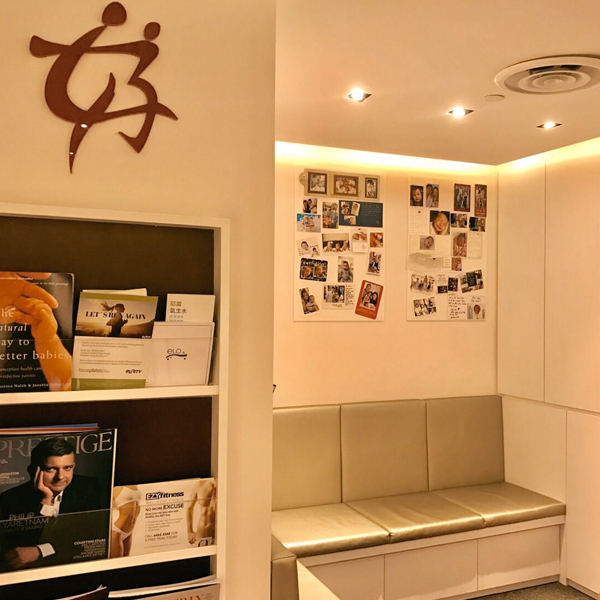

Dr Ann Tan is one of the few obstetricians and gynaecologists who is trained and accredited in both
fetal
medicine and reproductive medicine. Over the past two decades, she has been caring for both local and
expatriate communities as well as women of all ages.
A Public Service Commission (PSC) Scholar, Dr Tan has been the recipient of several prestigious awards
including the HMDP Scholarship for Fetal Echocardiography at the Yale School of Medicine, the Young Investigator Award by the International Society of Ultrasound in Obstetrics & Gynaecology in 1995 and the Young Investigator Award in the International meeting of the Royal College of Obstetricians & Gynaecologists in 1993.
Dr Tan is also the first Singaporean gynaecologist to hold the Diploma of Fetal Medicine from the
Fetal Medicine Foundation. She is a dedicated OBGYN in the field of prenatal diagnosis and care of
both mother and fetus. Notably, she introduced the First Trimester Pregnancy Screen or OSCAR into
Singapore in 2003 to give women the chance to screen their pregnancies earlier.
Most recently, she is now serving as the Medical Director of Virtus Fertility Centre, Singapore, and
is looking forward to bringing her wealth of experience to the established Centre.
Guiding Philosophy
Dr Tan believes that couples should be empowered with knowledge, and fertility should be
approached as a purposeful journey, one to be well-prepared for. She has a holistic approach to
fertility and stresses the importance of adopting good lifestyle habits and of having healthy
parents-to-be.
Led by her strong passion for women’s health, she continues to invest her time in serving at the
Women’s Health Committee under the Health Promotion Board as well as the Families for Life
Council.
Social Causes & Outreach
Clinical work aside, Dr Tan is actively involved in social organizations as well. She is a Past
President of Singapore’s Council of Women’s Organisations where she sought to address women’s
diverse needs. Subsequently, she was awarded the Public Service Medal for her efforts in the SCWO.
As a strong voice for education and empowerment in Singapore, Dr Tan also serves on the board of
Halogen Foundation, an IPC charity that supports youth engagement through leadership training and
equipping youth with the skills needed to become entrepreneurs.
An advocate for open discussion and public education on fertility, Dr Tan regularly contributes to
health programmes and talk shows, where she shares her insight on fertility and pregnancy issues.
Qualifications
• MBBS (S'PORE), FRCOG (LONDON), M MED (O&G) FAM (SINGAPORE)
• Visiting Consultant, Singapore General Hospital
Languages: Dr Tan speaks English and Mandarin fluently, and some conversational Cantonese.
Research Interests: Dr Tan’s research interest is focused on women’s health and fertility issues,
particularly with regard to nutrition and its impact on ovarian reserves. She is also interested in
the impact that lifestyle habits have on fertility and how this can be prevented or minimized.
Why Choose Women Fertility & Fetal Centre


- Trusted Female Obstetrician
- More Than 20 Years Experience
- Specialist in Fetal Medicine
- Professional & Trained Team
- Caring For Local & Expatriate Communities